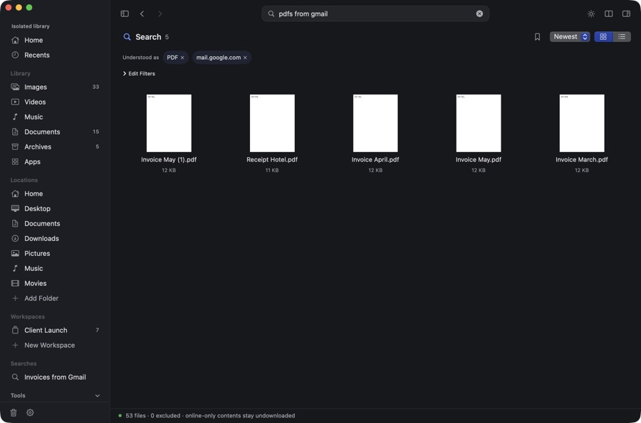
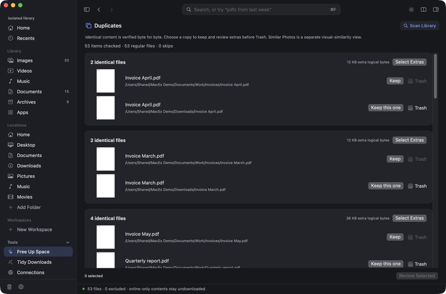
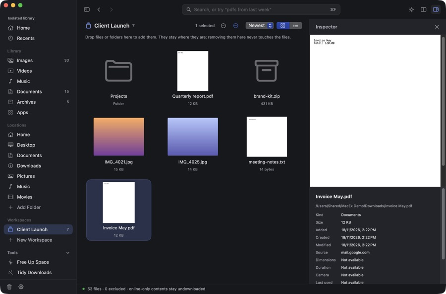

MacEx › FeaturesEverything MacEx can do
Updated November 18, 2026 for MacEx 0.8.12
Short answer: MacEx is a native Mac file manager built around a library of all your files. It finds files from a plain description and browses folders in one or two panes. It renames hundreds of files at once, zips and tags them, and opens SMB shares and SFTP servers in the same window. It previews files and copies text out of images. It frees up space by finding duplicates, old installers and large files, and you review everything before it goes to Trash. Search and text recognition run on your Mac. It is a one-time purchase with no account.
Product facts and requirements
Intelligent search
Find a file from what you remember about it: what it was, roughly when, how big, or where it came from.

A plain-language search, saved to the sidebar as Invoices from Gmail . Shown with sample files.
Plain-language search Available
Type a sentence such as pdfs from last week over 5 mb ; MacEx turns it into kind, date, size and source filters shown as chips you can edit.
Why it helps: You don’t need the file name or the folder.
Example: Find the contract a client emailed last month: pdfs from gmail last month .
Limits: fixed rules, not an AI model; it doesn’t understand what is in a photo.
Details about Plain-language search
Detailed filters Available
Filter by kind, extension, minimum and maximum size, and separate date ranges for created, modified and added. Show screenshots only.
Why it helps: Narrow a big library to a handful of files.
Example: zips bigger than 1gb older than 6 months lists the old archives worth deleting.
Details about Detailed filters
Search inside files Limited
Add containing to search text Spotlight has indexed. Turn on Text Search to also find words inside screenshots, scans and PDFs, read on your Mac.
Why it helps: Find a screenshot by a word in it.
Example: screenshots with wifi password finds the screenshot of a router label.
Limits: Text Search is opt-in; first 10 PDF pages; files up to 64 MB.
Details about Search inside files
Search by download source Available
Search from gmail , from slack or any site, or press ⇧ ⌘ J to see downloads grouped by website.
Why it helps: Find a download by where it came from.
Example: zips from github lists every release you downloaded.
Limits: needs the source address your browser saved; MacEx keeps only the site name.
Details about Search by download source
Saved searches Available
Save any search to the sidebar. Dates such as “last week” are recalculated each time you open it.
Why it helps: Smart-folder convenience inside MacEx.
Example: A Screenshots this week search that is always current.
Limits: not saved as Finder .savedSearch files.
Details about Saved searches
Advanced file management
Everyday folder work in one window: two panes, bulk actions, and undo for everything.
Split View with photos on one side and a project folder on the other. Shown with sample files.
Split View (dual pane) Available
⌘ \ shows two folders side by side; F5 copies and F6 moves the selection to the other pane.
Why it helps: Sort files between folders without juggling windows.
Example: Move photos from Downloads into a project folder in two keystrokes.
Details about Split View (dual pane)
Batch rename Available
Find and replace, or a template with {name}, {n} and {date}. Every new name is previewed, clashes are flagged, extensions are kept.
Why it helps: Rename hundreds of files safely, with undo.
Example: Turn IMG_4021.jpg into Lisbon 01.jpg for a whole trip.
Limits: up to 10,000 items at once.
Details about Batch rename
Folder browser Available
Path bar, Go to Folder (⇧ ⌘ G ), Back and Forward, grid or list, sort by any column, folder sizes and item counts, and a hidden-files switch.
Why it helps: See what is in a folder and how big it is at a glance.
Example: Find which project folder is taking 20 GB.
Limits: no tabs, column view or extra windows.
Details about Folder browser
Copy, move, rename, Trash Available
The usual commands, plus drag and drop. Name clashes ask Keep Both or Skip; existing files are never replaced. ⌘ Z undoes moves, renames and Trash.
Why it helps: Fewer accidents.
Example: Undo a move to the wrong folder.
Details about Copy, move, rename, Trash
Zip and unzip Limited
Compress a selection to .zip, or extract a zip next to itself. A cancelled run leaves no half-written archive.
Why it helps: Package files to send in one step.
Example: Zip a folder of invoices for your accountant.
Limits: zip only; no RAR, 7z or tar.
Details about Zip and unzip
Organization and automation
Keep files tidy without dragging them around by hand.
A workspace collects files from several folders without moving them. Shown with sample files.
Library by kind Limited
Files from your standard folders and up to eight you add, sorted into Images, Videos, Music, Documents, Archives and Apps. Files stay where they are.
Why it helps: See everything of one kind across folders.
Example: Open Videos to find every clip on the Mac.
Limits: up to 20,000 files; hidden files and app bundle contents are skipped.
Details about Library by kind
Finder tags Available
Tags from Finder appear in the sidebar; add or remove tags on many files at once.
Why it helps: Group files across folders the standard macOS way.
Example: Tag every file for a tax return Taxes 2026 .
Details about Finder tags
Workspaces Available
Named sidebar pages that collect files and folders from anywhere as bookmarks.
Why it helps: A project view without reorganizing folders.
Example: A Client Launch page with the brief, the logo zip and the invoices.
Limits: up to 100 workspaces.
Details about Workspaces
Tidy Downloads Available
Moves loose files in Downloads into Images, Videos, Music, Documents, Archives and Installers folders, after showing the plan.
Why it helps: A clean Downloads folder in one step, with undo.
Example: Clear 300 loose downloads before a backup.
Details about Tidy Downloads
Automation rules Limited
Two optional rules: trash old .dmg and .pkg installers, and file screenshots by month.
Why it helps: Routine cleanup without thinking about it.
Example: Installers older than 90 days in Downloads go to Trash automatically.
Limits: off by default; only in folders you add; runs while MacEx is in the foreground; no rule builder.
Details about Automation rules
Storage management
See what is taking up space, decide what goes, and change your mind later.

Duplicates are grouped after a byte-for-byte check; you choose the copy to keep. Shown with sample files.
Free Up Space Available
Lists old installers, forgotten downloads, old screenshots, empty files, large files over 100 MB, big old videos and apps you haven’t opened. Choose the age from 30 days to a year.
Why it helps: Find the space you can reclaim without hunting.
Example: Clear 12 GB of old installers and videos.
Note: nothing is pre-selected; you review before Trash.
Details about Free Up Space
Duplicate finder Available
Groups exact copies after size, SHA-256 and byte-for-byte checks. You pick the copy to keep.
Why it helps: Remove copies without guessing.
Example: Delete the second copy of every invoice you downloaded twice.
Details about Duplicate finder
Similar photos Available
Groups bursts and near-identical shots using on-device Vision.
Why it helps: Keep the best shot of a burst.
Example: Pick one of eight burst photos.
Limits: similar is not identical; review only.
Details about Similar photos
Trash history Available
Remembers the last 500 files MacEx moved to Trash and restores them to their original folder.
Why it helps: Cleanup you can undo days later.
Example: Put back a file you trashed last week.
Limits: only files MacEx itself moved.
Details about Trash history
Folder sizes Limited
The list view shows each folder’s size and item count.
Why it helps: Spot the biggest folders quickly.
Example: Find which folder fills the disk.
Limits: no treemap or chart.
Details about Folder sizes
Network and remote access
Servers and shared drives in the same window as your local files.
The Connections page with an SMB share and an SFTP server. Shown with sample files.
SFTP Limited
Password, private key or SSH agent sign-in; browse, upload, download, rename, new folder and preview.
Why it helps: Manage server files without a separate client.
Example: Download yesterday’s log from a staging server.
Limits: no whole-folder transfers, remote delete, terminal or sync.
Details about SFTP
Host-key verification Available
Unknown keys must be confirmed before sign-in; changed keys block sign-in until reviewed.
Why it helps: Protects your password from impostor servers.
Example: Confirm a new server’s fingerprint once.
Details about Host-key verification
SMB shares Available
Connect to smb://server/share; macOS handles the password, and the share opens as a normal folder.
Why it helps: Use your NAS or a Windows PC like a local folder.
Example: Move finished videos to the NAS with F6 .
Details about SMB shares
Productivity and integrations
Get to a file from anywhere, see what is inside it, and connect MacEx to the rest of your Mac.

The Inspector shows where a file came from and its details. Shown with sample files.
Preview in place Available
Press Space to look inside photos, PDFs, videos, audio and documents; arrow keys move to the next file.
Why it helps: No app switching.
Example: Flip through 40 scans to find the signed one.
Details about Preview in place
Inspector Available
⌘ I shows the source website, size, dimensions, duration, camera, dates, tags and recognized text.
Why it helps: Answer “where did this come from?”
Example: See that a PDF came from mail.google.com.
Limits: shows only metadata the file has.
Details about Inspector
Copy Text (batch) Limited
⇧ ⌘ C copies the text from up to 20 images or PDFs at once, read on your Mac.
Why it helps: Get text out of screenshots and scans.
Example: Copy the numbers from ten receipt photos into a spreadsheet.
Limits: up to 20 files and one million characters per copy.
Details about Copy Text (batch)
Quick Search Available
⇧ ⌘ Space from any app brings MacEx forward with search ready.
Why it helps: Search files as fast as Spotlight.
Example: Find an attachment while writing an email.
Details about Quick Search
Shortcuts and Siri Available
Actions: Find Files , Search in MacEx , Get Latest Download ; plus macex://search links.
Why it helps: Use MacEx in your own automations.
Example: A shortcut that attaches your latest download to a new email.
Details about Shortcuts and Siri
Menu bar downloads Available
An optional menu bar item lists your ten newest downloads.
Why it helps: Drag a fresh download anywhere.
Example: Drop the PDF you just downloaded into a chat.
Details about Menu bar downloads
Keyboard shortcuts Available
Every main action has a shortcut; ⌘ / lists them, ⌘ ? opens the guide.
Why it helps: Work without the mouse.
Example: ⇧ ⌘ D opens Duplicates.
Details about Keyboard shortcuts
Privacy and security
What stays on your Mac, and what MacEx does to keep files safe.
On-device processing Available
Indexing, search and text recognition run on your Mac. File names and contents are not uploaded.
Why it helps: Private by default.
Example: Search tax documents without sending them anywhere.
Note: MacEx connects only for license activation and opt-in update checks.
Details about On-device processing
No account, no cloud AI Available
No sign-up, no API key and no cloud AI service.
Why it helps: Nothing to manage.
Example: Install, enter your license key, done.
Details about No account, no cloud AI
Safe cleanup Available
Removed files go to the Trash and can be restored; MacEx has no permanent-delete option.
Why it helps: Mistakes are reversible.
Example: Restore a file from Trash history.
Details about Safe cleanup
Signed and notarized Available
Signed with an Apple Developer ID and notarized by Apple.
Why it helps: macOS opens it without warnings.
Example: First launch shows the standard downloaded-app prompt only.
Details about Signed and notarized
Verified updates Available
Automatic updates are opt-in. Each update is checked for MacEx’s Developer ID and Apple notarization, and installs when you quit.
Why it helps: Stay current safely.
Example: Turn on updates once and forget about it.
Details about Verified updates
Optional Full Disk Access Available
MacEx works without it; turn it on only to reach folders macOS protects.
Why it helps: You choose what MacEx can read.
Example: Allow access only if your files live in a folder macOS protects.
Details about Optional Full Disk Access
No feature matches that filter. Try a broader word, or search the docs .
Limits, unsupported features and plans
Available means the feature ships in MacEx 0.8.12 and works as described. Limited means it works with the limits listed on its card. Everything below is not supported today. No upcoming features have been announced, so this page lists none as planned.
Tabs, multiple windows or a column view.
A built-in Terminal, Git integration or a file permissions editor.
Folder sync, file comparison, file conversion, or RAR, 7z and tar archives.
Whole-folder transfers or deleting files over SFTP; FTP, WebDAV, S3 or cloud-drive connections.
A storage treemap or chart.
Cloud AI, or understanding what is in a photo.
Replacing Finder as the system file manager and file picker. MacEx works alongside it. MacEx vs Finder
Related
MacEx runs on macOS 14 or later, Apple silicon and Intel. One-time purchase, no account, no subscription.